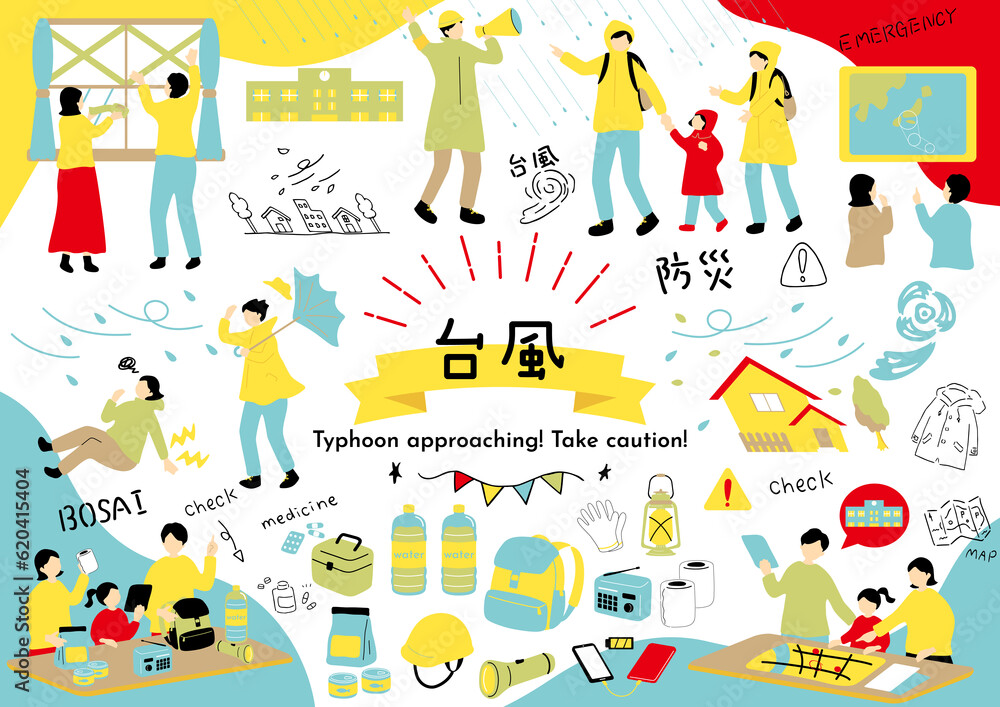
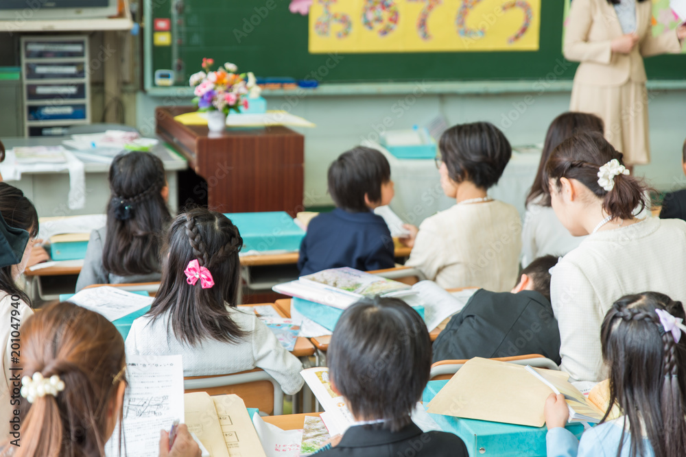

PTA主催 子どもたちを闇バイトから守る！
飛幡中学校
闇バイトの手口と、子どもたちを守るための関わり方について学びました。
FUTURE
北九州教育財団は、家庭・学校・地域の連携のもと、 行政や関係機関とともに子どもたちの健やかな成長と豊かな学びを支えています。
北九州教育財団は、家庭・学校・地域の連携のもと、 子どもたちの健やかな成長と豊かな学びを支えることを目的としています。
各種支援団体や行政との協働による活動助成や講演会の開催、教育環境の充実に向けた事業を通じ、 地域一丸となって子どもたちの成長を応援しています。
各学校の単位PTAが主体的に取り組む、地域や学校の実情に応じた特色ある活動を支援するため、 北九州教育財団では「単位PTA活性化事業」を実施しています。
子どもの安全・安心を守るための防犯・ネット安全教育をはじめ、学習支援、 心身健やかに育つ体験型イベント、地域と連携した交流など、 学校ごとの創意工夫をいかした取り組みに対して助成を行い、活動の活性化と継続を後押しします。

財団の体制やこれまでの歩みについてご紹介します。
本財団の活動は、多くの企業・団体のみなさまのご支援によって支えられています。